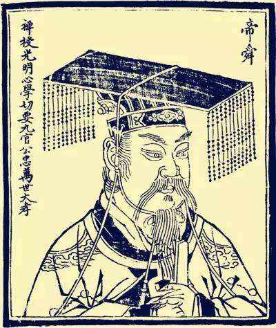

伟人故里，和谐韶山 欢迎您的到来
地名由来
“韶”乃虞舜时乐名，《书·益稷》曰：“箫韶九成，引凤来仪。”史载：韶山，相传舜帝南巡时，奏韶乐于此，因名。《辞海》据此诠释韶山：“相传古代虞舜南巡时，奏韶乐于此，故名”……山有八景，风景优美。虞舜，远古时代父系氏族社会后期的部落联盟首领。姓尧，号有虞氏，名重生，世称虞舜。他是继尧之后被中华民族世代推崇的又一明君圣主。他为尧所器重，尧不但把盟主的尊位禅让于他，还把两位爱女娥皇、女英许配与他。舜继位之后，为造福人类，开拓疆土，辞别爱侣，甘冒苦辛，渡黄河，涉长江，深入荆楚蛮荒之地，探测山川利弊，规划拓垦宏图。南下途中舜与侍从宿营韶山，侍从们为舜帝载歌载舞，随着优美的音乐舞蹈，山崖翕然，山鸣谷应，声震林木，凤凰闻乐展翅，嘤嘤和鸣。山间胜境，人间盛会，亘古传诵。久，人们便把舜帝欣赏过的音乐称为韶乐，把他赏韶乐的山岭叫韶山。


1893年12月26日，一代伟人毛泽东降临在韶山这片钟灵毓秀的土地上.
毛泽东（1893年12月26日-1976年9月9日），字润之（原作咏芝，后改润芝），笔名子任。湖南湘潭人。中国人民的领袖，马克思主义者，伟大的无产阶级革命家、战略家和理论家，中国共产党、中国人民解放军和中华人民共和国的主要缔造者和领导人，诗人，书法家。
1949至1976年，毛泽东担任中华人民共和国最高领导人。他对马克思列宁主义的发展、军事理论的贡献以及对共产党的理论贡献被称为毛泽东思想。因毛泽东担任过的主要职务几乎全部称为主席，所以也被人们尊称为“毛主席”。
毛泽东被视为现代世界历史中最重要的人物之一，《时代》杂志也将他评为20世纪最具影响100人之一。
点我看韶音召凤舞